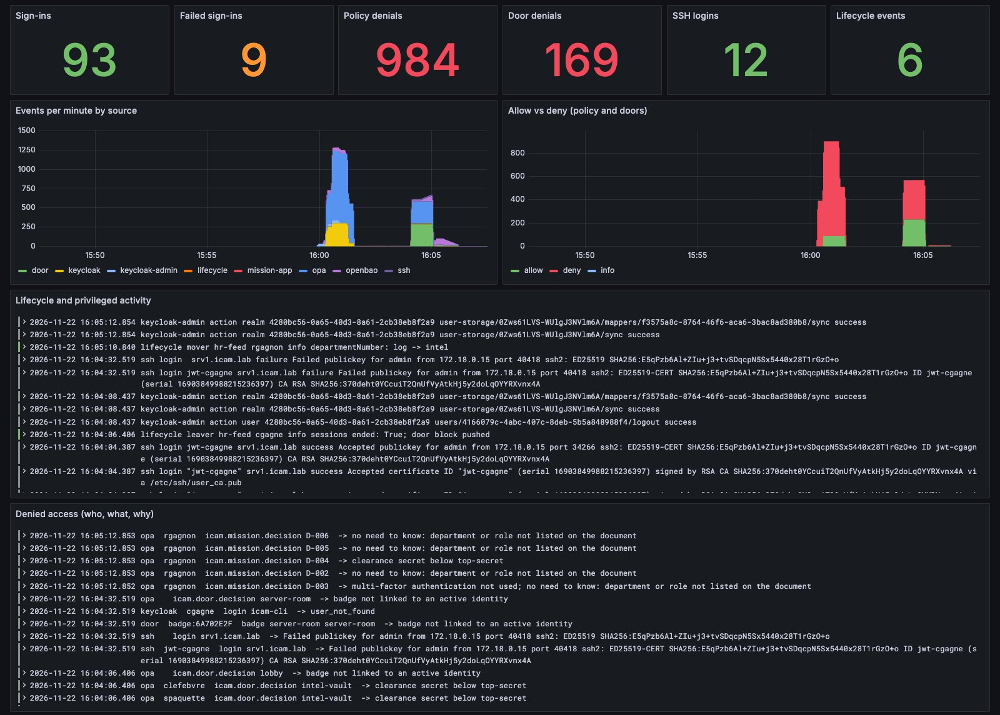

ICAM Testbed: Identity, Credentials and Access for 300 People
An identity, credential and access management platform shaped by the Canadian Armed Forces Identity, Credential and Access Management Project: one identity per person and device, central sign-in with MFA, short-lived credentials, attribute-based access to web apps, servers and doors, and an audit trail that shows who did what and why they were allowed or refused.
Overview
The ICAM Testbed is a working identity, credential and access platform for a synthetic organisation of 300 people, built around the public description of the CAF Identity, Credential and Access Management Project. Everything runs end to end in Docker today and was measured by an automated harness that signs in like a person would.
The DND project, listed in the Defence Capabilities Blueprint at $100 million to $249 million, will give a unique identity to each person and network device that accesses CAF information resources, with standardised, centrally managed identification and credentialing. Its requirement names seven capabilities, from a centralized identity data broker to integrated physical access control and integrated monitoring, auditing and reporting. This build answers each one with open-source software and a small amount of my own code.
The point of ICAM is that access follows the person: one identity, one policy, and when someone leaves, access ends everywhere at once. The rehearsal measures exactly that. One change in the HR file ended a leaver's web session, blocked new sign-ins, made their existing SSH certificate useless on every server and locked them out at the door, all within one second.
Repository: github.com/TYFSADIK/icam-testbed, with the platform as code, the policies and their tests, the audit collector, the door controller, the Raspberry Pi badge reader, the rehearsal and its results.
The DND Project
From the public entry in the Defence Capabilities Blueprint, managed by the Directorate of Capability Integration at National Defence.
| Item | Public detail |
|---|---|
| Project | Identity Credential Access Management (CAF ICAM), new project |
| Objective | A unique identity for each person and network device accessing CAF information resources; a standardized, centrally managed identification and credentialing process |
| Funding range | $100 million to $249 million |
| Options analysis | Completed |
| Definition | In progress |
| Start of implementation | 2026/2027 |
| Initial delivery | 2027/2028 |
| Final delivery | 2028/2029 |
| Capability areas | C4I; Surveillance and Reconnaissance; Training and Simulation |
| Investment areas | Fixed Communications Systems; Information Management Tools; Networks and Network Support; Optical Systems; Photonics Systems; Training Services |
| Key industrial capability | Cyber Resilience |
Requirement by Requirement
| CAF ICAM requirement | In this build |
|---|---|
| Enterprise-wide unique identities | An HR file is the source of truth; every person gets a unique user ID, service number and badge; every device a certificate and a directory entry |
| Centralized identity data broker | Keycloak 26 federates the OpenLDAP directory; applications trust only Keycloak |
| Credential management | OpenBao: short-lived SSH certificates for people, host certificates for servers, X.509 certificates for devices, revocation; TOTP and WebAuthn authenticators in Keycloak |
| Centralized authentication and authorization policy management and enforcement | Keycloak for authentication (MFA, lockout, sessions); OPA policy as code for authorization, enforced by the app, the doors and OpenBao policies |
| Centralized logical access control | The mission app, Linux servers and Grafana all take their access from the same identities |
| Integrated physical access control | A door controller on the same identities and the same policy engine; badge readers prove their own identity with certificates |
| Integrated monitoring, auditing and reporting | One audit record shape from every component, hash-chained; Loki, Prometheus and a Grafana access audit dashboard; an access review report |
The Platform
The synthetic organisation has seven departments (operations, intelligence, cyber operations, logistics, IT, personnel and security) and four kinds of people: military, civilian, contractors and liaison officers from allied organisations. Each person has a clearance and a home organisation, and some have roles such as sysadmin, intelligence analyst or security officer. All of it is generated from a seed, so every run builds the same organisation.
Access Policy
Roles alone are not enough for defence data, so access combines roles (RBAC) with attributes (ABAC), written as OPA policy with its own tests:
| Rule | Applies to | Example denial reason |
|---|---|---|
Multi-factor sign-in used (the token's amr shows a one-time code or a hardware key) | documents | multi-factor authentication not used |
| Clearance at least the classification | documents, doors | clearance secret below top-secret |
| Home organisation within the release caveat (CAN, CAN-EYES-ONLY, FVEY) | documents | organisation US-DOD not in release caveat CAN |
| Need to know: department or role listed on the document | documents | no need to know |
| Zone membership and access hours (security officers exempt) | doors | outside access hours 6:00-20:00 |
| Active identity | doors | badge not linked to an active identity |
Every decision returns its reasons, and every decision is logged, so a denial can always be explained to the person and to an auditor.
Credentials
Servers have two shared accounts, admin and operator, and no
passwords at all. Only sysadmins can get an admin certificate. Each certificate's key ID is the
person's name, so the server log still shows exactly who logged in. Servers present host
certificates, so clients verify them without the usual "trust this new host?" prompt. A key
revocation list lets the lifecycle tool kill a leaver's certificates on every server at once
instead of waiting for them to expire.
Doors and Badge Readers
The door controller uses the same identities and the same policy engine as the web app. A badge reader is a network device, so it needs an identity too: it must present a certificate from the OpenBao device CA over mutual TLS, and the controller refuses it the moment its certificate is revoked. With no answer from the controller, the reader stays locked.
| Physical part | Example | About (CAD) |
|---|---|---|
| Raspberry Pi 4 or 5 with supply and card | 2 GB is enough | 90 |
| NFC reader | PN532 breakout on I2C | 15 |
| Badges | MIFARE or NTAG215 cards | 15 |
| Relay, 12 V fail-secure strike or solenoid bolt, 12 V supply, flyback diode | bench mounting only | 50 |
| Green and red LEDs with resistors | 2 | |
| FIDO2 hardware keys for administrators (optional) | YubiKey 5 NFC or similar | 70 each |
- Wire the PN532 to the Pi's I2C pins (3.3 V, SDA, SCL, ground), the relay to GPIO17, and the LEDs to GPIO27 and GPIO22.
- Wire the strike on its own 12 V supply through the relay's normally-open contact, with a 1N4007 diode across the coil. Never power the strike from the Pi.
- Enable I2C, install the PN532 library, and check the reader appears at address 0x24.
- Issue the reader its device certificate:
icamctl device-enrol reader-server-room, and copy the certificate, key and CA chain to the Pi. - Run
hardware/reader_pi.py --zone server-room, tap a card, put its UID on a test person in the HR file, and runicamctl jml.
Joiners, Movers and Leavers
The HR file drives everything. icamctl jml compares it with the directory and
applies the difference: joiners get accounts and groups, movers get their attributes and
groups changed, and leavers are moved to ou=leavers (kept for audit, never
deleted) after their access has been cut.
Measured Results
The rehearsal harness signs in to the mission app through Keycloak like a browser would, enrols an authenticator for each test person by computing TOTP codes itself, then checks every decision against an independent oracle written from the policy description, not from the Rego. These numbers are from the final run of the Docker rehearsal.
| Check | Result |
|---|---|
| People, badges, service numbers | 300 people, all unique; directory and Keycloak in step |
| MFA | authenticator enrolled at first sign-in; password alone refused; wrong code refused; 65 people enrolled in the run |
| Web app decisions (RBAC + ABAC) vs an independent oracle | 390 of 390 agree (44 allowed); median 3.1 ms per request |
| Door decisions vs the oracle | 280 of 280 agree; unknown badge refused; reader without a certificate refused |
| Revoked badge reader refused | 0.0 s after revocation (controller refresh pushed) |
| SSH | sysadmin certificate works on both servers as admin; staff refused an admin certificate; operator certificate refused as admin; host verified by CA, no trust-on-first-use; certificate key ID names the person |
| Brute force | 5 wrong passwords lock the account (correct password refused); unlocked after 29.2 s |
| Leaver: web session, new sign-in, existing SSH certificate, door | all gone 0.98 s after the HR change |
| Leaver: an already-issued CLI token at OpenBao | refused after 64.72 s (60 s token life + 5 s leeway) |
| Mover: log → intel | coalition threat assessment 403 before, 200 after signing in again |
| Grafana single sign-on | security officer Admin, sysadmin Viewer, staff refused |
| Audit | 2018 records, hash chain intact; every source present: keycloak 322, keycloak-admin 39, openbao 157, opa 1191, door 286, ssh 16, lifecycle 6, mission-app 1 |
What the Rehearsal Found
It took three full runs. The most important findings, each fixed in the code:
| What happened | Why | Fix |
|---|---|---|
| Every document was denied for "multi-factor authentication not used" | Keycloak's amr claim stays empty unless each authenticator in the sign-in flow has a reference value | pwd, otp and hwk reference values configured as code |
| A leaver's already-issued token still logged in to OpenBao for 359 seconds | A 5-minute token plus OpenBao's default 150-second leeway | CLI tokens live 60 seconds, leeway 5 seconds: 64.7 seconds measured |
| The first session after enrolling an authenticator counts as single-factor | Keycloak records only the password when the code was typed on the enrolment page | Kept on purpose: enrolment is a bootstrap; the person signs in again with the code |
| OpenBao lost its unseal key on the first start | The code read the wrong field of an answer that is shown only once | The whole answer is saved before parsing |
| Every audit event was dropped | The collector never created its log directory | Created at start, and the audit check is now part of the test |
Audit and Reporting
Keycloak sign-ins and admin changes, every OpenBao request, every OPA decision, every badge swipe, every SSH login and every lifecycle change becomes one record with the same fields (time, source, actor, action, target, outcome, reason). Each line carries the SHA-256 hash of the line before it, so editing or deleting a record is detectable.

The access review report answers an auditor's standard questions from the live systems: identities in the HR file, the directory and Keycloak (299 in each after the leaver), orphan accounts (0), leavers with any access (0), MFA enrolment, locked accounts, every privileged account by name, and the most common denial reasons.
How to Build It
git clone https://github.com/TYFSADIK/icam-testbed && cd icam-testbed
./local/rehearse.sh up # 300 people, Keycloak, OpenBao, OPA, doors, servers, monitoring (about 5 minutes)
./local/rehearse.sh test # the end-to-end scenarios; results/rehearsal/report.json and access-review.md
./local/rehearse.sh downDay to day: icamctl jml for HR changes, icamctl device-enrol and device-revoke for readers, icamctl report for the access review, and tools/join-server.sh to bring a real Linux server into the SSH trust.
Safety Notes
Frequently Asked Questions
What is the CAF ICAM project?
The Canadian Armed Forces Identity, Credential and Access Management Project is a National Defence project in the Defence Capabilities Blueprint. It will support a unique identity for each person and network device accessing CAF information resources, with a centralized identity data broker, credential management, centralized authentication and authorization policy, centralized logical access control, integrated physical access control and integrated monitoring, auditing and reporting. The listed funding range is $100 million to $249 million, with implementation from 2026/2027 and final delivery in 2028/2029.
Is this build part of the DND project?
No. It is an independent, personal research build using only the public project description and synthetic data. It is not affiliated with, funded by, or submitted to DND or the CAF.
How fast does a leaver lose access?
In the rehearsal, one change in the HR file ended the web session, blocked new sign-ins, made the existing SSH certificate useless on every server and locked the door within 0.98 seconds. A command-line token issued just before the change stayed usable at OpenBao for 64.7 seconds, the length of its 60-second lifetime plus a 5-second leeway.
How is physical access integrated?
The door controller uses the same identities and the same OPA policy engine as the web application, so clearance, department, role and hours decide who opens which door. Badge readers authenticate to the controller with device certificates from OpenBao, and a revoked reader is refused immediately.
Which tools does it use?
OpenLDAP for the directory, Keycloak with PostgreSQL as the identity broker with TOTP and WebAuthn, OpenBao for SSH and device certificates, Open Policy Agent for access policy, Prometheus, Loki and Grafana for monitoring, and my own lifecycle tool, audit collector, mission app and door controller.
What Happens Next
- Next: the Raspberry Pi badge reader with a real strike, enrolled with its own device certificate.
- Then: FIDO2 hardware keys for every administrator, and a policy that requires them for admin certificates.
- Later: the platform on Proxmox with real servers joined, Keycloak and OpenBao clustered, and cards with cryptographic authentication instead of plain UIDs.
Cite This Page
Citation formats
Plain text
Taki Sadik, "ICAM Testbed: Identity, Credentials and Access for 300 People", TYFSADIK, https://tyfsadik.org/work/defence/identity-credential-access-management (accessed 2026-11-22).BibTeX
@misc{sadik-icam-testbed,
author = {Sadik, MD. Taki Yasir Faraji},
title = {ICAM Testbed: Identity, Credentials and Access for 300 People},
year = {2026},
url = {https://tyfsadik.org/work/defence/identity-credential-access-management},
urldate = {2026-11-22}
}APA
Sadik, M. T. Y. F. (2026). ICAM Testbed: Identity, Credentials and Access for 300 People. TYFSADIK. https://tyfsadik.org/work/defence/identity-credential-access-management